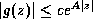
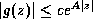

News
News
| Getting Started | Documentation | Glish | Learn More | Programming | Contact Us |
|
| VERSIONID |
News
|
ecliptic
ecliptic co-ordinates
effective area
elevation
EMACS
E-mail
encapsulation
encoder
ephemeris second
ephemeris time
EPS
equalization
equatorial mount
Ethernet
Exabyte
exception
exception handler
exponential type
exp × sinc function
The mean annual great-circle path of the Sun on the celestial sphere, i.e. the mean plane of the Earth's orbit with minor irregularities smoothed out. The plane of the ecliptic is inclined by about 23° 27' to the plane of the celestial equator; more exact values are given in the Astronomical Ephemeris.
A co-ordinate system used mainly in the description of planetary
motions. The ecliptic latitude  is measured away from the plane of the ecliptic toward the ecliptic pole (positive to
the north of the ecliptic) and the ecliptic longitude
is measured away from the plane of the ecliptic toward the ecliptic pole (positive to
the north of the ecliptic) and the ecliptic longitude  is measured eastward along the
ecliptic from the vernal equinox
to the intersection with the great circle passing through the object
and the ecliptic poles.
is measured eastward along the
ecliptic from the vernal equinox
to the intersection with the great circle passing through the object
and the ecliptic poles.
The measure of an antenna system's ability to respond to radiant energy, such that the power density (per unit area) of the radiation times the effective area of the antenna measures the power delivered by the antenna to its receptors.
1. Angular distance of a celestial object above the horizon plane, measured on a great circle passing through the object and the zenith. Synonymous with the altitude angle.
2. In surveying, a height above mean sea level.
EditingMACroS, an extensible and customizable screen editor used on computers with a wide variety of operating systems. EMACS is written in C and its higher levels are programmed in EMACS LISP. There are "modes" provided to assist in editing most well-known programming languages.
Electronic mail: messages passed from one computer user to another through computer networks and/or via modems over telephone lines.
Programming errors can be minimized if data can be changed only in a well regulated way. Encapsulation is a means of enforcing such regulation, by allowing access to the data only through a class interface. This is also known as data hiding.
1. On a telescope, a device for digitizing the position or rotation of a moving part, i.e. for reading the mechanical position of that part of the telescope structure into a numerical control system.
2. In computing, a facility that encodes data to achieve compression, in contrast to a decoder, which decompresses data.
The length of a tropical second (1/31,556,925.9747 of the tropical year) on 1900 January 0.5 ephemeris time.
Time based on the ephemeris second, i.e. based on the motion of the Earth around the Sun rather than on the rotation of the Earth (Universal Time) or on an atomic clock (atomic time).
Encapsulated PostScript format: an ASCII file format for a page of graphics and textual data. An EPS file will contain Adobe Systems PostScript commands for generating the page, preceded by a header that tells a Postscript interpreter what size to make the plot.
A mount for a steerable antenna (or more generally, for a telescope structure) by which the structure is driven about one axis (the polar axis) that is parallel to the Earth's rotation axis and about an orthogonal axis (the declination axis). An antenna, or telescope, so mounted can track a celestial source by being driven only westward around the polar axis, at a rate matching the Earth's rotation. The aperture will not rotate with respect to the sky as the antenna tracks the source. These geometrical advantages are offset, for large telescopes, by the difficulty and cost of supporting massive structures obliquely to the vertical and horizontal directions.
A local area network based on coaxial cable first described by Metcalfe & Boggs of Xerox PARC in 1976. Specified by DEC, INTEL & XEROX (DIX), IEEE 802.3. Data are broken into packets which are transmitted using the CSMA/CD algorithm until they arrive at the destination without colliding with any other. Bandwidth ~10 Mbit/s. Disk-Ethernet-Disk transfer rate with TCP/IP is typically 30 kilobytes per second. Thin Ethernet cabling is 5 mm in diameter and can connect workstations satisfactorily over about 300 meters. Thick Ethernet is 1 cm in diameter and has a useful range of about 1 km.
A company (and, by extension, a tape format) for computer data backup and transfer onto data quality 8-mm VCR tape. Exabyte units can store 5 Gbytes of data per tape.
An error condition that changes the normal flow of control in a program. An exception may be generated ("raised") by hardware or software. Hardware exceptions include reset, interrupt or a signal from a memory management unit. Exceptions may be generated by the arithmetic logic unit or floating-point unit for numerical errors such as divide by zero, overflow or underflow or instruction decoding errors such as privileged, reserved, trap or undefined instructions. Software exceptions are even more varied and the term could be applied to any kind of error checking which alters the normal behavior of the program.
In C++, an exception is a language-supported mechanism whereby objects (which usually convey information about the error) are thrown from one part of a program and may be caught elsewhere in the program.
Code that is called when an exception occurs during the execution of a program. If the programmer does not provide a handler for a given exception, a built-in system exception handler will usually be called, aborting the program and sending an error indication to the user.
An everywhere-analytic function g(x) is said to be
of exponential type  A if
c such that, for all
z, . See Paley-Wiener theorem.
A if
c such that, for all
z, . See Paley-Wiener theorem.
A useful gridding convolution function: same as the Gaussian-tapered sinc function, except that the exponent of the argument to the exponential function may be other than two.
You could now go back to the:
Copyright © 1995,1996,1999,2000 Associated Universities Inc., Washington, D.C.
abridle@nrao.edu, 19 July 1996, 12:05 EDT